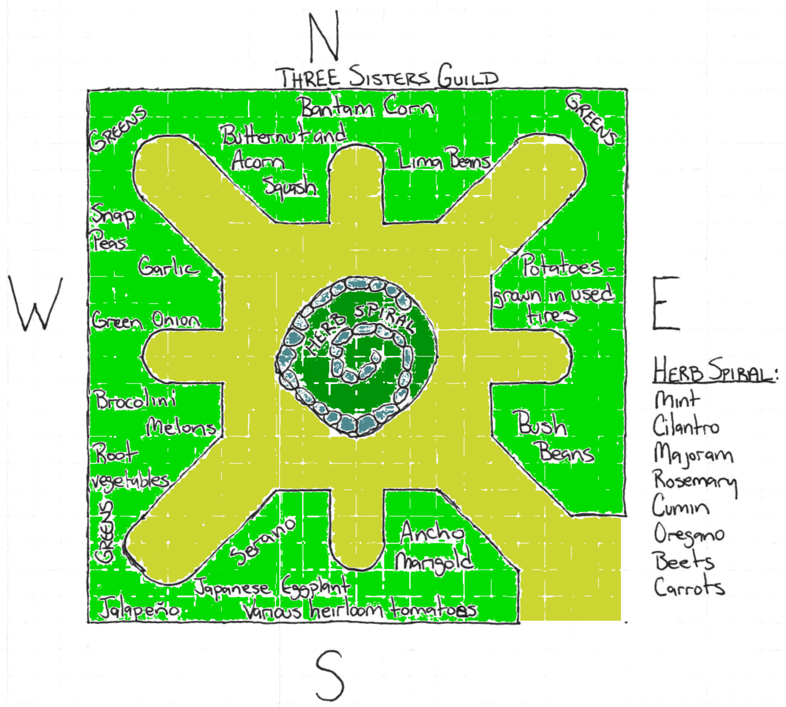

Mission Statement:
Use permaculture principles to extend the mission of the Mo Betta'
Greens Market to broaden food access in northeast Denver by breaking
down the obstacles of access and affordability to food that is local,
organic and traceable to its source.
Goals
-create a zone 1 permaculture garden design that will act as a reliable source of annual crops for the Mo Betta' Greens market.
-create zone 2 and 3 permaculture/yard garden designs that will serve the dual purpose of addressing household health disparities and serve
as sites of secondary production for market sourcing.
-build invisible structures that will allow the market to deepen its community relationships with the ultimate goal of creating a network
of community stakeholders.
Sectors and Flows
On The Base Map
SECTORS
schools
be active in the space
garden accessibility
foot traffic
zoning
market implications
*DHA will sell land
pollution
*electrical
*transformers
*soil test
*from previous houses
development
gentrification
outside businesses that serve urban gardens
People
income inequality
diversity
FLOWS
water
*rain
*water put in
ground
*incline
*runoff
*water harvesting
sunlight
wind/wind break
existing vegetation
soil quality
people
*water harvesting

Sustainability Park Demo Garden Budget:
Labor-
Slow Food Denver Crop Mob
Occupy Denver Food Justice Committee crop mob
Materials:
Sheet Mulching
Straw: 10 bales @$3 per bale=$ 30
Manure: 400 square yards @ $10 per yard= $ 400
Cardboard: can be acquired for little or no cost at local bike shops
and dumpster diving over several weeks.
Herb Spiral
Stones for Herb Spiral: collected from around the site
Amended Soil: 2 yards @$15 per yard=$ 30
Seed: $90-100-assuming all seed is sourced from seed companies and there are
no in kind donations of seed or seedlings
Total cost of Sustainability Park demo garden=$ 560
How Permaculture Principles are applied to the design:
The R & B Mo’ Betta Green (MBG) MarketPlace exemplifies the basic Permaculture Ethics of:
1) Caring for the Earth. The Mo’ Betta Green MarketPlace conducts business on the core idea of proving the community of northeast Denver with "fresh, local, integris food™"
which means that the goods have a traceable origin, are organic, and local
2) Caring for People. The MBG Marketplace takes it a step further by providing resources, information, education and policy;
holistic practitioners; health, nutrition, and wellness experts; live cooking demonstrations; food tastings; and music and arts.
3) Returning the Surplus. The MBG Marketplace sees itself as a cooperative economic marketplace for the vendors of the market
and for the un/underserved neighborhoods surrounding the marketplace.
Beverly states that “’the problem is the solution’ is a foundational strategy that has influenced this market’s design and it is the premise …
that draws the vendors to this marketplace”
We started with intensive observation and evaluation of the client’s needs for this project. We found that in addition to a traditional garden design, the MBG Marketplace would greatly benefit from a streamlined plan that addresses the need for increased and diverse connections between the market and its community, vendors, and other businesses and non-profit organizations to help create beneficial.
We wanted to help Beverly catch and store energy and materials by amplifying her networks and using the resources available to her (such as the Crop Mob & Occupy Denver Garden) during the increased popularity and awareness about healthy eating and living.
The kick-off event will perform multiple functions including
1) brining the community together to share in healthy food
2) workshops
3) networking opportunities
4) the arts and creative expression.
We hope that MBG MarketPlace’s network will continue to grow, bringing in different elements to help Beverly run the market and events more efficiently.
The key-hole garden design for the Sustainability Park plot where MBG MarketPlace will source its food for food demonstrations during market days optimizes edge and allows for easier maintenance and access to the plots.
We have implemented small scale, intensive systems by integrating companion plantings and plant guilds to bring out each crop’s natural strength and maximize yields in the long run. The plot will be nourished only using natural and organic methods and fertilizers. The plot will also be constructed using recycled or reclaimed materials and will integrate some yard farms concepts so that individuals can see what they can implement in their own homes.
Hopefully, this will spark the creativity for neighbors to imagine new ways to see and adapt their own personal food system.
PR/Marketing
While the MBG MarketPlace has been doing outreach to various community entities there are still opportunities to grow. With limited staff capacity, our suggestion would be to make the least change for the greatest effect in already existing practices. There is a lot of buzz about the market already in place, let’s maximize that by making it easier for people to stay in the MBG loop.
1) Create a website. Make sure the page is user friendly and efficient. (John: what’s the phrase for increasing traffic through tags??)
2) Increase social media usage. Encourage more people to “like” your Facebook group.
3) Get more earned media through radio, community/neighborhood publications, church bulletins, and school newsletters (before school lets out!). Create interest at the start of the market as well as press throughout the season. (in addition to community calendars)
4) Continue spreading the word through community members, allies, and relevant organizations like food pantries and high foot traffic stops in the area
5) Increase partnerships to multiply your reach.
6) Create an email list and send out reminders of market hours, the location, what’s going to be in season for that particular month or week, and any special events at the market like live music, food/cooking demonstrations, children’s activities, etc.
7) Have a strong emphasis on signage. Continue strategically placing signs to increase the traffic coming through on market days.
• Tailor your messages. Speak to the different facets of the community. What would get them selling and/or buying at the market? Also, get into the Spanish-speaking publications and ensure to include Spanish-speaking volunteers and vendors on market days. (for example, if you or a partner organization is hosting a window farm demo, target your outreach to apartment dwellers and senior living communities)
• Maximize your time by finding vendors, volunteers, and/or community members to write blogs, tweet, promote MBG MarketPlace on facebook, write articles (YourHub), and write press releases.
• Conduct a few focus groups and/or a short survey (maybe with a 10% or $10 coupon the participants can use at the market) to see what types of communication are effective, what components of the market people respond to, and the opportunities to grow.
The most important part is to build strong, strategic, and honest relationships with vendors, community members, local businesses, and non-profit organizations. Beverly has an infectious energy and makes it so easy for people to want to be involved! Continue cultivating a more healthy community by being a passionate advocate for the market!
Sourcing of seeds
The first year the Mo Beta group will provide the necessary seeds for the sustainability park.
Another sourcing of seeds would be seed swaps, several restaurants that just carry heirloom products, farm donations of seeds from existing crops, food banks that the vegetables are going bad as well as organic food stores that the produce is getting to old to sell.
Also as the end of the season some of the crops as well as aged produce can be saved to be able to be turned into seed. This will not only give a complete set of seeds for the sustainability park, but it will provide a venue and a potential to be able to teach other's about the process. A well organized program of this will supply ample seeds for present uses as well as provide a seed bank to be able to expand and swap.
Educational element
classes
1. Sourcing of seeds and harvesting them.
2. Growing micro greens indoors
3. Sprouting
4. Probiotics from various food sources
a. Cultured vegetables
b. Kombucha
c. Daily probiotic made from coconut
5. Nutritional classes
a. Eliminating diabetes
b. Cancer diets
c. General nutrition
d. Healthy vegetable diets and recipes
e. Juicing
6. Worm composting
7. Instruction on setting up an outdoor garden w/ guilds plus indoor gardening
The classes may be signed up for at the farmer's market events, a bulletin board at sustainability park or at various school's or church's in the neighborhood. Also any other viable business site wanting to post and or neighborhood publications. Also a Meet up group suggesting possibilities in the
5 points area may also be a good way of getting the word out there.
The classes could be held at close a school, church or business that may be able to host the event. The classes could be a great start to be able to make the community more aware of food and health. The classes would also bring together a greater collection of people to help support the market.
Mo Betta Greens Business Plan Year I
Key elements:
Sustainability Park
Farmers Market
Community Education
Invisible Structures
Sustainability Park
Priorities:
Secure space
Begin developing of land
Sourcing: Heirloom seeds
Diversity and placement of Crops
Crop Mob?
Farmers Market
Central element?
If not, what is central element?
Functions of Farmers Market
Frequency?
Goals?
Year 1
Ultimately?
What is role of farmers market?
Community Education
Youth education component
Parents – nutrition??
Elders?
What is source of community education?
What informs community education?
Elders?
Social justice principles?
Spirituality?
History?
Culture?
Invisible structures:
Networking and community building
Bulletin Board Time Bank (yr 1) – centered in Sustainability Park
Year 2: movement toward internet based time bank
Identifying networks:
Community: Artists / Activists / Educators / Yard farms
Business: Green orgs, businesses, institutes, etc.
Potential partners not currently in the realm of “Green”
Demos??
Web of invisible structures:
Community producers and consumers (ideally participants are both)
Labor force for larger scale projects
Web/internet network for info sharing/promotions/community
Community events
Street team / general support network
Community Buy-In is crucial for long term sustainability of Mo Betta Greens
Community events focus???
Holistic mental/physical/spiritual connection between people in community
Holistic mental/physical/spiritual connection between people and S-Park/land
Connection and community buy-in to Mo Betta Greens as an institution
Year 1 major community events:
1. Planting Party
2. Seed swap at first market
3. Official Kick off Party - June
4. Harvest Party – August / September
Year 2:
Ownership: begin looking into options for permanent location / land
Yard farms
Diversification
Small business relationship development
Mo Betta Bucks????
Time Bank – begin establishing internet component of Time Bank, community training sessions for internet time bank
Institutionalizing Mo Betta Greens
Use a spacebar or arrow keys to navigate